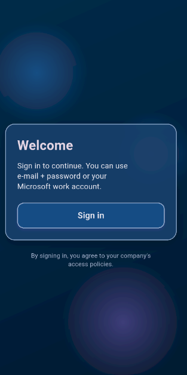
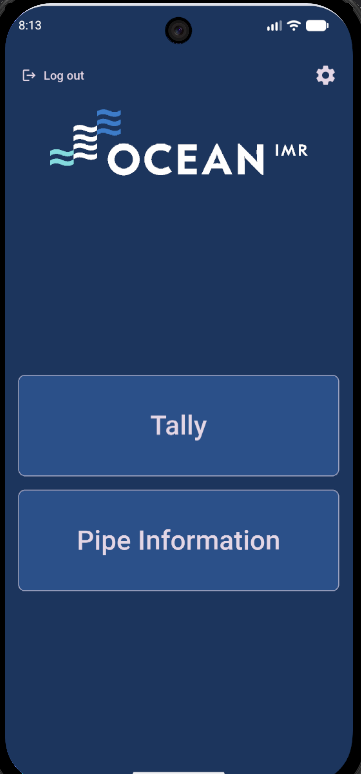
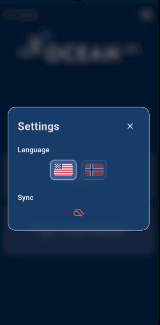
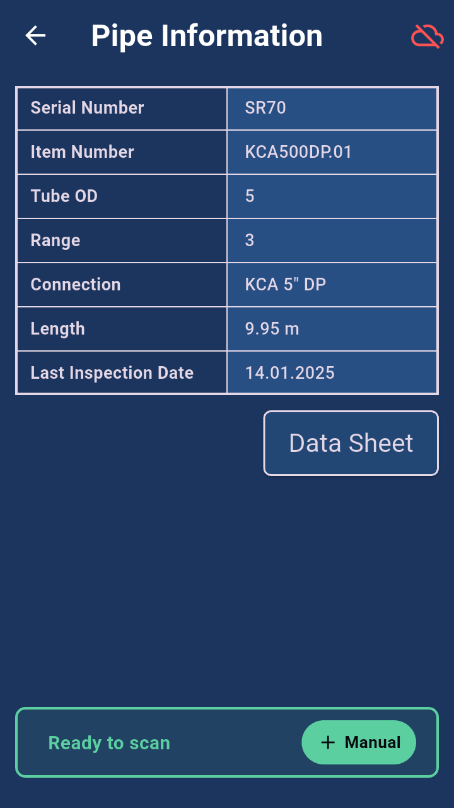
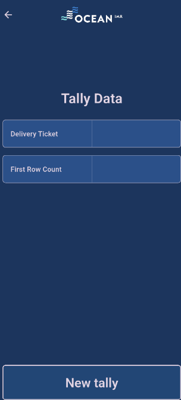
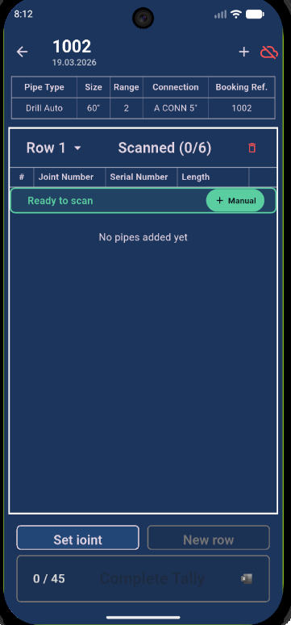
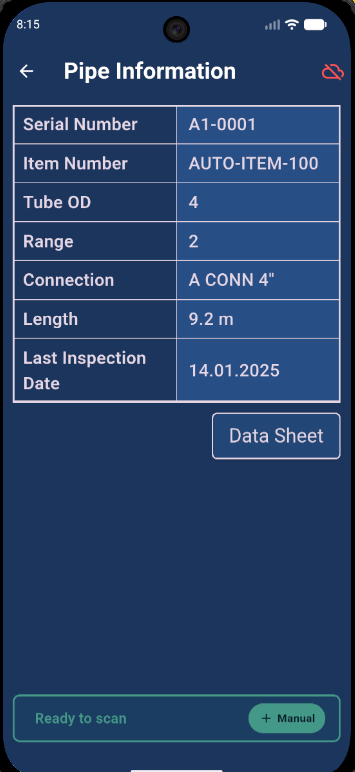
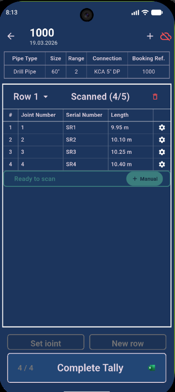

This app allows you to:
When opening the app, you must log in using your company account via Microsoft Entra ID.
Steps:

After login, you will land on the main screen.
Available options:

Open settings from the top corner.
Options:
Cloud Status Indicator:

Use this section to retrieve detailed pipe data.
Steps:
Data Sheet:

This is the primary workflow of the app.

After completing a row:
If a pipe is missing or misplaced:

To change information about a scanned pipe:

When all pipes are scanned and rows are filled:
Important: Ensure the cloud status is green before completing to guarantee data is saved to the backend.
